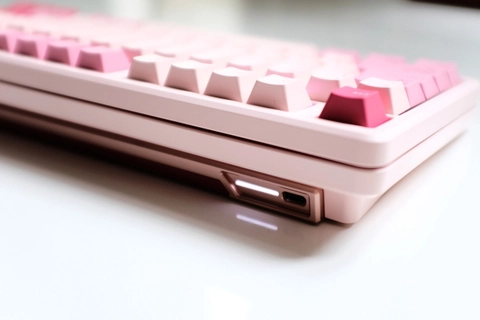

Blog
HƯỚNG DẪN SỬ DỤNG BÀN PHÍM CƠ INFI75
Cảm ơn các bạn đã lựa chọn INFI75 - bàn phím có âm gõ stock hay nhất tầm giá! Dưới đây là phần hướng dẫn sử dụng chiếc bàn phím INFI75 chi tiết nhất!
Lưu ý: hiện tại phần mềm đang có chút lỗi ở phiên bản mới nhất, mọi người không update firmware nhé! Cài đặt phần mềm xong bạn hãy kết nối bàn phím với máy tính thông qua dây cáp. Phần mềm hỗ trợ keymap, chỉnh ảnh màn hình TFT, upload ảnh GIF. Điều chỉnh chế độ kết nối với các thiết bị